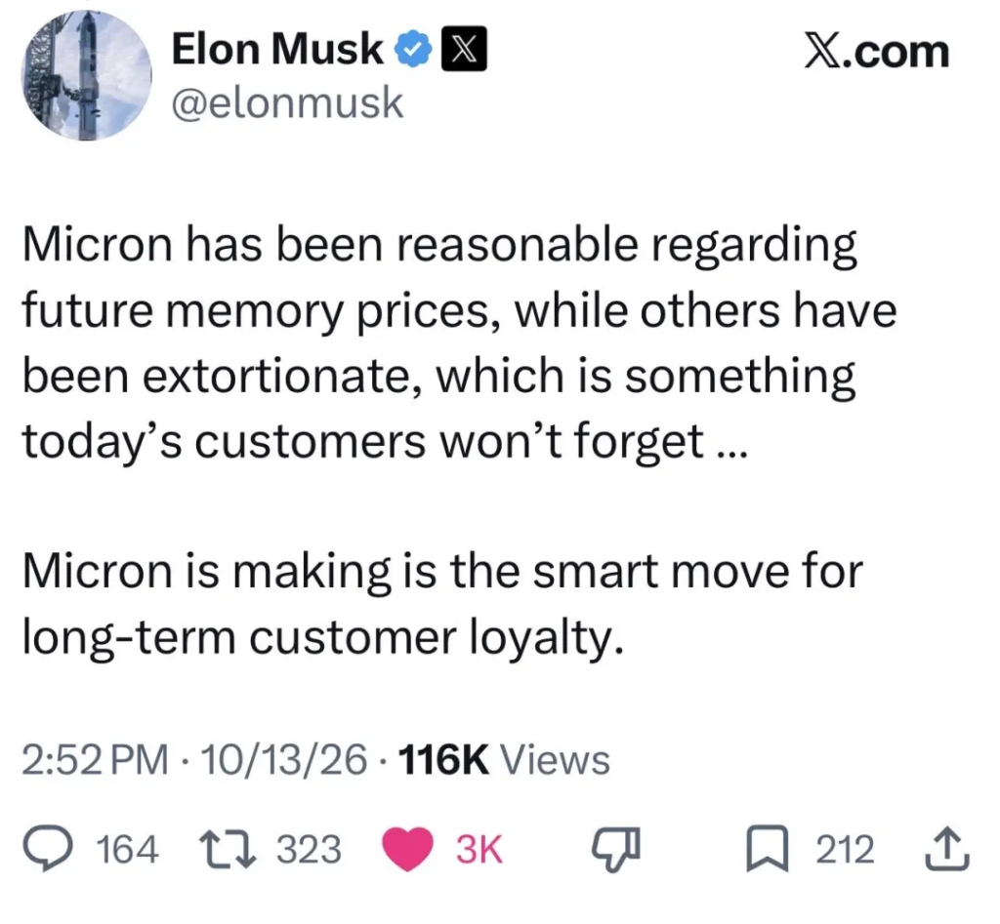

芯片股“跌跌不休”。
芯片行业“风向标”费城半导体指数连续8个交易日下跌，总计下跌11.41%，创下2008年以来持续时间最长的连续下跌纪录。存储芯片指数跌幅更是达到17.6%。
英伟达9天市值缩水6000亿美元。韩国“存储双雄”SK海力士与三星电子过去一周分别下跌24.3%和17.8%，同样创下2008年以来的最大单周跌幅。
市场的巨幅震荡之下，有人开始讨论各种散户爆仓、基金清算的话题，其中就包括重仓AI的对冲基金VARA遭遇杠杆清算以及韩国最大养老金也在这一轮回撤中“损失”1370亿美元的消息。
市场中上演的一幕幕“剧情”总是似曾相识。
在上一轮芯片股调整中，被华尔街视作“新股神”的前OpenAI研究员利奥波德·阿申布伦纳创立的Situational Awareness基金爆仓。一大批重仓韩国存储芯片的韩国年轻投资者，“倒在”疯狂的爆仓大潮之中。
一份好到不及预期的财报
外围的跌势当中，被野村证券誉为“中国皇冠上的明珠”的长鑫科技没能“独善其身”。10月19日早盘，长鑫科技一度跌超8%，最终下跌7.77%，报收41.52元。
“我们也不知道为啥崩成这样。”一位长鑫内部人士说，“也可能是外围市场带崩的了。”
长期跟踪芯片产业发展的蓉和半导体咨询CEO吴梓豪也持有相同的看法，他说：“存储又没有什么利空。”
长鑫的下跌与一份亮眼的业绩预告形成了鲜明的反差。
10月16日晚间，长鑫科技发布公告，披露2026年前三季度业绩预告以及公司收到董事长朱一明提议回购股份的函件。
业绩预告显示，长鑫科技前三季度营收2650亿元-2700亿元，归母净利润预计1310亿元至1325亿元，实现由亏转盈，盈利规模远超去年同期约52.8亿元的亏损额。
“2025年下半年以来AI算力需求快速增长，全球DRAM行业景气度提升，产品供不应求，价格大幅上涨。”长鑫在公告中如此描述一片大好的存储形势。
10月20日，长鑫科技召开2026年第二次临时股东会。交流中，长鑫管理层透露，目前在合肥、北京两地的晶圆厂持续保持高产能利用率运转，订单饱满。
没有利空，创纪录的盈利，再加上回购信号，却换来了“暴跌”，这留下了一个不得不探讨的问题：市场在交易什么？
如果把前三季度的业绩拆开，也可能会发现一丝信号。
据前三季度预告与上半年数据推算，单看第三季度，长鑫科技营收环比增长15%到20%，但归母净利润环比微增1%到4%。二季度，两个数据的环比增幅分别是95.9%和113%。
这也就意味着，长鑫科技的利润增长斜率大幅放缓，赚钱的速度变慢。更直观地说，长鑫涨价“涨不动了”。
涨价斜率塌了
TrendForce的跟踪数据显示，通用DRAM合约价环比涨幅一路收敛。
2026年一季度涨93%到98%，二季度降到58%到63%，三季度只剩13%到18%，四季度预计进一步收窄到10%到15%。
这其实解释了长鑫收入增量不转化成增量利润的底层逻辑——价格涨九成时，利润能环比三位数；价格只涨一成多，利润环比只能个位数。
放大到整个存储产业，问题亦是如此。
江波龙，第三季度扣非净利环比下滑22%到38%，净利率从47.4%掉到26%；美光最新一季营收、净利环比分别涨30%和33%，而上季是71%和102%；三星电子第三季度营业利润环比涨20%，只有第二季度的三分之一。
不过，针对TrendForce的数据，前述长鑫内部人士也提出了质疑。在他看来，需求还在的情况下，存储扩产的新产能兑现之前，价格增长斜率不可能降得这么快。“毕竟大厂都是今年开建，到量产也要差不多2年时间。”
美光在三季度业绩会上释放的激进信号也能佐证这种观点。
美光管理层称2027、2028年存储供需将比2026年“更紧”，看不到何时回到平衡，预计2026全年DRAM营收突破1000亿美元，并大幅度上修2027年的资本支出，其中大部分为建设性资本支出（加速2028年下半年及之后的洁净室就位）。
在美光看来，洁净室空间不足，即便行业在扩产，扩产的速度仍然匹配不上需求的增速。
为了证明需求没有减弱，美光甚至晒出了长协数据。管理层透露，公司已签26份战略客户协议，剩余履行义务约1500亿美元，覆盖至2030年约35%营收，均为take-or-pay（照付不议）——不管是否全部提货，都必须按最低购买量支付货款。
二级投资人的另一套算法
一位二级市场投资人把这一轮下跌，归因为“double booking（超额预订）”的出清。他的判断是存储太贵了，已经压制到AI需求。
这一点，得到了世界首富马斯克的佐证。
10月14日，马斯克在社交平台上炮轰存储价格太贵，他说：“美光在未来内存价格方面一直很合理，而其他公司则狮子大开口，这一点是今天客户不会忘记的。”

某种程度上，涨价像是一个市场化的调节器，在一定阶段，客户可以接受持续的价格上涨，但到了上涨的临界点，下游客户可能也会因为承受不起而做对应的调整，取消超额预订部分的单子，就是一种典型的代表。
“每年AIDC的装机取决于人工、环评、备案和工期等基建因素，过去1年多价格上涨下游和中间商都抢货导致了价格的超涨，”前述二级市场投资人说，“明年的建设计划就这么多，价格大幅上涨的预期结束，终端加速提货和囤货的意愿也在放缓。”
他强调，存储依旧短缺，但在下游调整建设节奏的情况下，价格会回落下来，而且对应的是“超涨”的DRAM和NAND，“HBM的价格没跌。”
“超订”是涨价周期当中的一种普遍现象，这也是为什么美光拥有26份长协的原因，但即便是长协的“照付不议”条款，也只是强调客户违约要按最低购买量支付货款。
在这种背景下，一旦AI数据中心等下游建设节奏放缓、供需紧张的弹性增加，多余订单就被退回，现货和股价的预期就会一起下修。
前述投资人关于HBM价格保持稳定的判断，也与多家外资行的判断保持一致。此前，伯恩斯坦、瑞银都提到，HBM因AI算力短缺、且受出口管制限制设备，供需更紧、价格更稳。
这个问题在长鑫身上可能表现的更为突出——长鑫自己的HBM还刚起步，短期吃不到这块红利，反而在通用DRAM涨价见顶时缺少对冲。
另一位资深卖方研究员在总结本轮存储芯片调整时告诉腾讯科技，长鑫的扩产节奏引发了海外对存储供给扩张过快的担忧，“担心加太猛了。”
在他看来，过渡的扩张会把存储产业拉到传统周期性的角度上来，市场担忧的点变成了供过于求，而这与过往的情绪形成了极其鲜明的反差。
过去担心存储紧缺，现在担心存储不缺。
一根绳子上的“蚂蚱”
就像吴梓豪所说，存储本身并没有什么利空。引发恐慌和本轮回调，其实是 CoreWeave——这家靠借债扩张 AI 算力的公司，股价一周累跌超 25%。
关键点在于，其债务相关的五年期违约保险（CDS）利差冲破 1000 个基点。其发行的无担保债券收益率飙升至15%左右，双双落入垃圾债区间。
简单来说，市场担心CoreWeave还不起钱。
在这同时，一些关于CoreWeave的利空也不断释放出来，包括数据中心项目延期、资本开支放缓等等。
偏下游的风险和担忧，逐步传导至上游供应链，最终10月12日至16日这一周，韩国市场SK海力士跌去24.3%，居龙头之首；三星电子一周跌17.8%。美国市场美光单周重挫14.6%、闪迪跌12.6%。
从这个角度来看，整条存储和半导体链就像是一条绳子上的“蚂蚱”。
比较有意思的是，一度有消息称，这一轮存储暴跌源自“长鑫的技术威胁”——10月10日，长鑫总裁曹堪宇披露，计划年底推出基于4F²架构的新一代DDR5 RDIMM。相比主流6F²架构，4F²架构对应的芯片面积可缩减约30%。这也就意味着，同样的良率下，一片晶圆可以切出更多的芯片。
野村测算，4F²与3D DRAM在2028年之前的展望期内“都不会产生实质性影响”，长鑫的4F²量产也要到2027—2028年；眼下全球商用DRAM仍是6F²架构。中信证券也提示，4F²处于早期验证阶段，良率、产量、客户认证都待观察，对中期存储产业影响有限。
换句话说，这一轮“刺穿”存储泡沫的，不可能是一项2-3年后量产的解决方案。我们应该还是要回到产业链的逻辑中寻找答案。
在吴梓豪看来，这一轮暴跌叠加了诸多因素。
首先是美国通胀超预期，长端美债收益率上行，直接带来了重新定价高杠杆企业风险的问题。其次是债股双杀——利率升高令市场担忧靠大量融资的CoreWeave的违约风险。另外，由于前沿AI实验室的年度经常性收入（ARR）增速放缓，市场更担心其投入产出可能无法覆盖融资成本。
根据《金融时报》及多家财经媒体披露，截至2026年9月底，OpenAI的真实年化收入接近500亿美元。与此前数周在华尔街及部分媒体间流传的700亿美元相比，存在约200亿美元的预期差。
造成这种差异的关键，在于计算口径——Anthropic将云合作伙伴的销售额按总额计入，而OpenAI仅计入自身收入。部分一级市场投资者为寻求直接对标，对OpenAI数据进行调整，由此得出700亿美元的结果。
剔除掉宏观因素，当最下游的前沿AI实验室收入预期不乐观，再往上的云计算厂商出现履约风险，再叠加更上游的存储厂商面临的价格“超涨”以及扩产带来的周期性隐忧，交织在一起催生了本轮半导体概念股的回撤。
大家都是一条绳子上的“蚂蚱”，一旦下游增速放缓，寒意就自上而下传导。
“看空AI的观点市场一直都有，并非新鲜事；但若美联储真的升息，这类看空观点确实会占上风，”吴梓豪说。“不仅是存储，晶圆代工全部都受到了影响，所有的AI概念股跟跌，都是这个逻辑。”
在他看来，市场的担心有其道理，但改变不了AI产业的趋势，“利率、ROI的担忧会贯穿未来数年AI的发展，空头占上风的年份声量更响，年年都会有，却都改不了方向。如果有修正，那整个AI行业还是挺健康的，最怕没道理的乱涨透支未来数年，那才不好。”
所以，回到开头那个问题——长鑫刺穿了“存储泡沫”吗？不是。
本文来源：腾讯科技